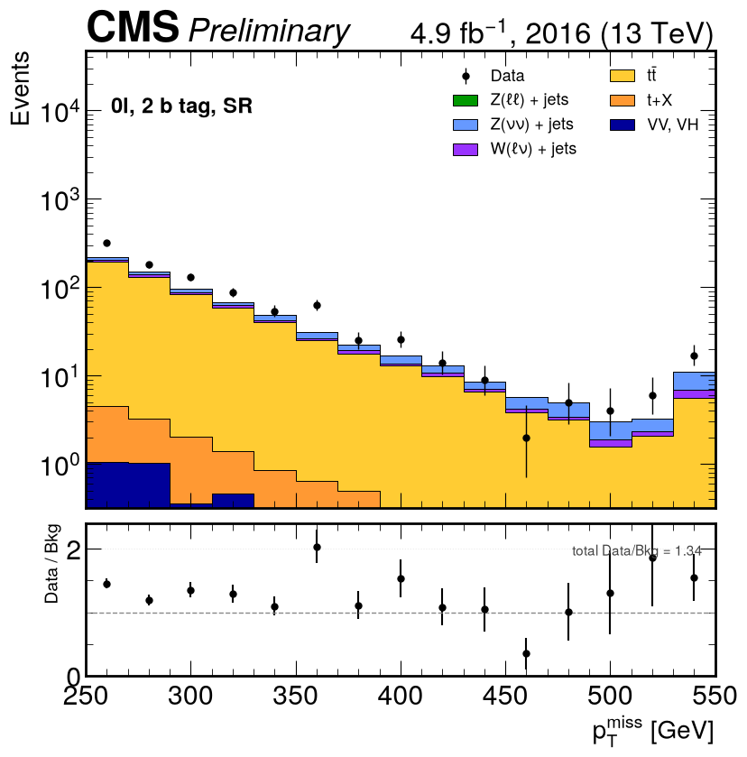
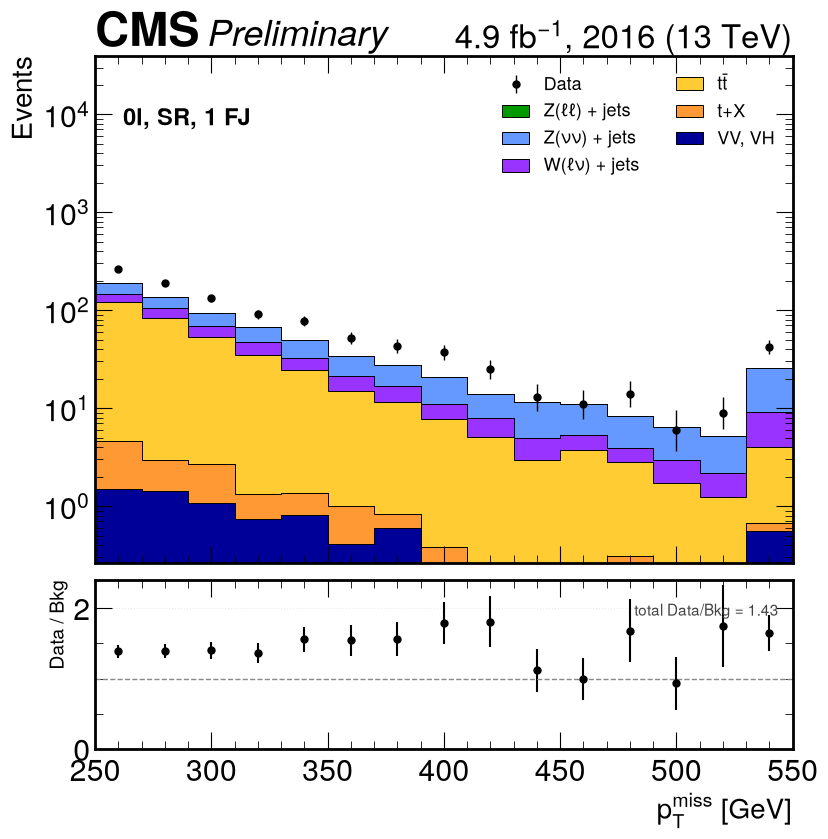
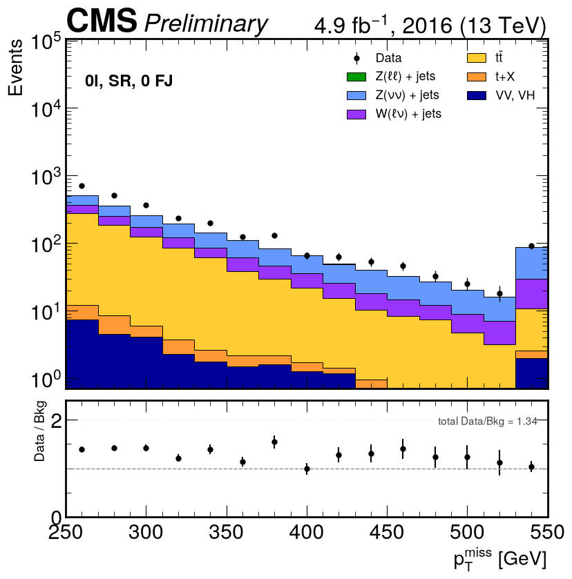
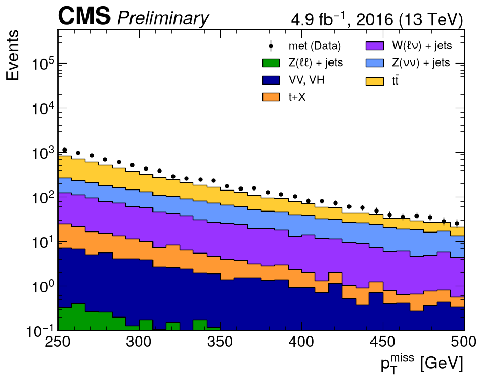
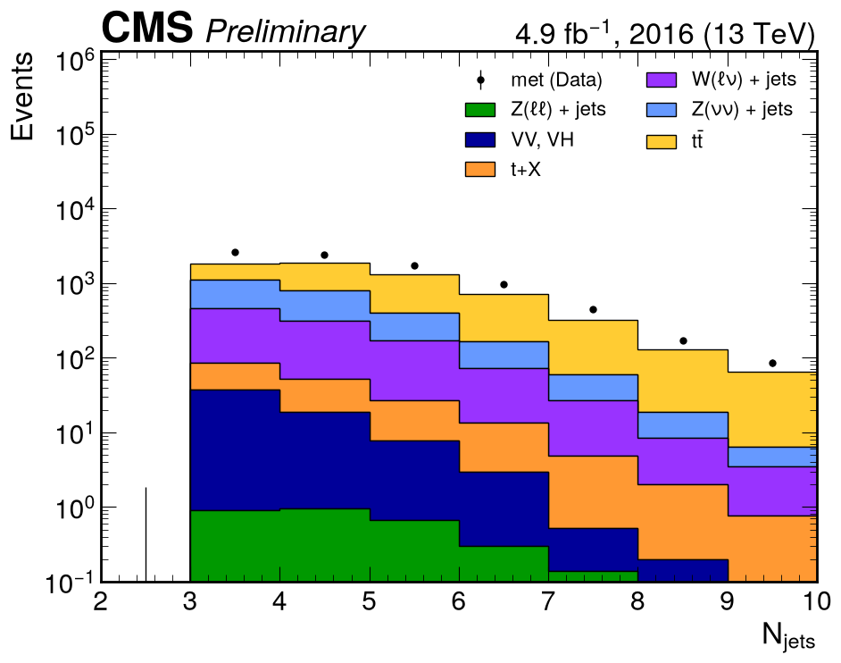
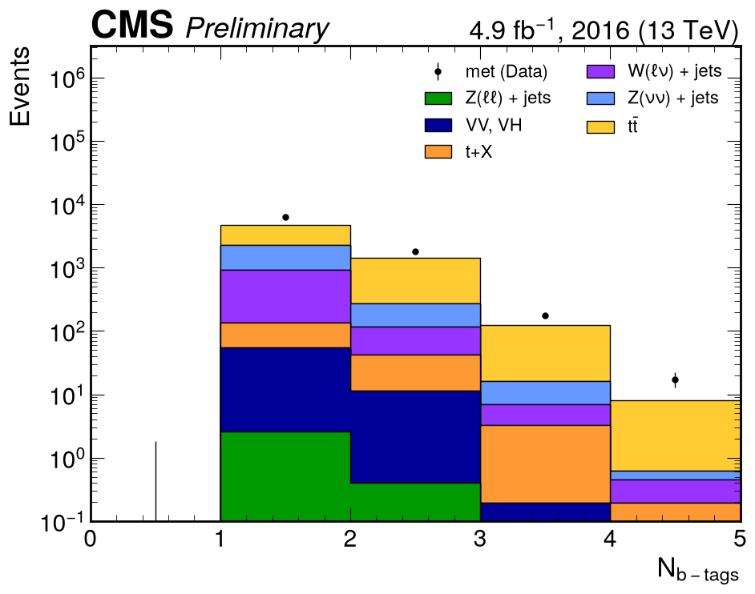

All-hadronic channel (0 leptons)¶
Data: MET primary dataset, Run2016H, 20 of 32 files = 0.5514 of the record by bytes → \(L\) = 4907 pb⁻¹. MC: 20 datasets, 20 files each (fewer where the record has fewer).
Selection¶
| Stage | Cut | Source |
|---|---|---|
| Quality | MET noise filters (7, plus eeBadScFilter on data) and golden-JSON luminosity mask |
note §2.1 |
| Baseline | 0 isolated leptons, \(n_{\text{jet}} \ge 3\), \(n_b \ge 1\) (CSVv2 medium, 0.8484) | note Table 10 |
| Baseline | \(p_T^{\text{miss}} \ge 250\) GeV, \(\min\Delta\phi(j_{1,2}, p_T^{\text{miss}}) > 0.4\) | note Table 10 |
| Signal region | \(\min\Delta\phi(j_{1,2}, p_T^{\text{miss}}) \ge 1.0\), \(m_T^b \ge 180\) GeV | note Table 13 |
| Signal region, \(n_b \ge 2\) | \(p_T(j_1)/H_T \le 0.5\) | note Table 13 |
| Categories | \(n_b = 1\) with 0 forward jets · \(n_b = 1\) with ≥ 1 forward jet · \(n_b \ge 2\) | paper Table 1 |
MC weight: \(w = \sigma \cdot L \cdot w_{\text{gen}} / \sum w_{\text{gen}} \times w_{\text{top }p_T}\), where the top-\(p_T\) weight applies to tt̄ only (PHYS-14).
Signal regions — \(p_T^{\text{miss}}\)¶
Binning 250–550 GeV in 15 bins of 20 GeV, last bin holds the overflow, as in paper Figure 5.



Baseline distributions¶



Background composition¶
| Group | Events | Share | Note Table 12 |
|---|---|---|---|
| tt̄ | 3698.8 | 59.1 % | 45.5 % |
| Z(νν) + jets | 1508.4 | 24.1 % | 29.7 % |
| W(ℓν) + jets | 870.0 | 13.9 % | 15.1 % |
| t + X | 116.8 | 1.9 % | — |
| VV, VH | 64.1 | 1.0 % | 2.7 % |
| Z(ℓℓ) + jets | 3.1 | 0.0 % | — |
| data/MC | 8392 / 6261.0 | 1.340 | 1.06 |
Reading the result¶
- Every composition row moved toward Table 12 as the corrections were applied, and none moved away. Z(νν) went from ~0 % (the upstream notebook read an unrelated signal sample) to 24.1 %.
- data/MC rose from 1.217 to 1.340 with the last correction, and that is expected: top-\(p_T\) reweighting only removes tt̄ events, while the corrections that would add events back — the V+jets NLO/LO k-factors and the VH sample — are exactly the ones not available. Composition responds to what was fixed; normalisation waits on what is missing.
- The ratio panel is flat across \(p_T^{\text{miss}}\). A calibration difference (UL2016 vs the paper's legacy reprocessing) would distort the shape; a flat ratio means the shape is right.
- The remaining gap per process is quantified in the convergence log.
No control-region plots for this channel
The upstream 0-lepton "control region" AH0lWR does not exist in the paper: every AH control
region in note Table 14 requires one or two leptons and needs the SingleMuon/SingleElectron
datasets. See PHYS-09.